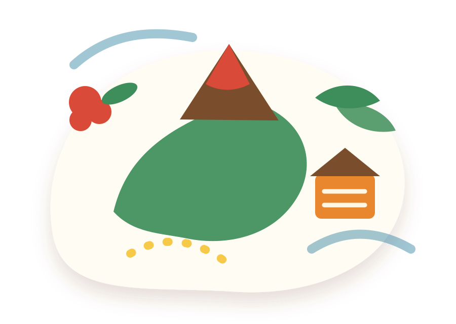

Carte péi
Lieux à découvrir, pique-niques, bassins, points de vue, quartiers, marchés et lieux de mémoire.
ExplorerMini plateforme culturelle familiale
La Réunion à découvrir, apprendre et transmettre en famille.
Une mini application culturelle pour explorer les lieux péi, apprendre des mots créoles, jouer en famille, retrouver des souvenirs lontan et garder vivante nout culture.

Les univers Zarlor
Chaque rubrique est pensée pour être simple à consulter sur mobile, agréable en famille et facile à enrichir avec tes propres contenus.
Lieux à découvrir, pique-niques, bassins, points de vue, quartiers, marchés et lieux de mémoire.
ExplorerMots, expressions, proverbes, traduction, usage et variantes pédagogiques.
ApprendreDevinettes, quiz, objets lontan, plantes, animaux et lieux péi.
JouerRecettes réunionnaises, ingrédients, astuces et souvenirs autour de la cuisine.
CuisinerObjets, métiers, scènes de vie, traditions et mémoire familiale.
Se souvenirGuides PDF, carnets imprimables, jeux, box culturelles, ateliers et événements à venir.
DécouvrirCarte péi
Filtre les lieux, ouvre une fiche, garde tes favoris et remplace les exemples par tes vrais lieux vérifiés.
Kréol dann poche
Une base lisible grand public, avec variantes 77 / KWZ / Tangol visibles en mode pédagogique.
Kosa mi lé ?
Un mini-jeu familial alimenté par le fichier quizzes.json.
Dann marmit
Des fiches recettes imprimables à enrichir avec tes propres photos et recettes vérifiées.
Souvenir lontan
Un espace média pour transformer les témoignages et souvenirs en contenus éditoriaux.
Les zarlor à venir
Une monétisation douce pour soutenir le projet sans perdre son âme culturelle et familiale.
Partenaires
Proposez un zarlor à faire découvrir aux familles avec une fiche, une histoire, des photos et une présence sur la carte.
Partaz out zarlor
Partage une proposition. Chaque contenu doit être relu, vérifié et sourcé avant publication officielle.